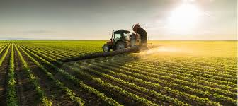

Variedades no campo

Plantação de soja
Aqui você verá uma plantação enrequecida.

Variedade de frutas e legumes
Aqui você verá as variedades de frutas e legumes que o campo fornece a cidade.

Tecnologia de ponta
Aqui você verá a Tecnologia avançada e usada no campo